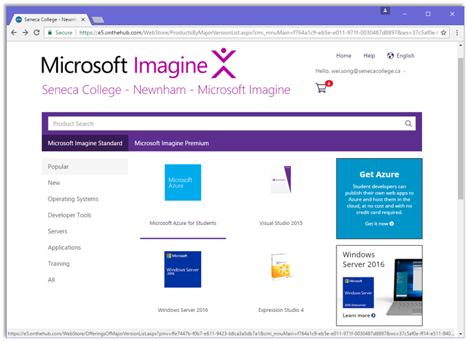
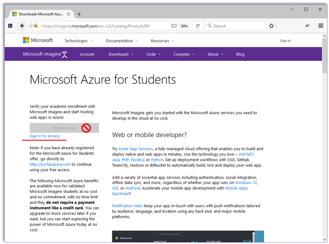
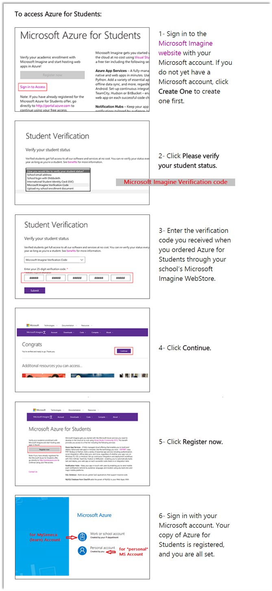

INT422 – Lecture 7-2
Getting started with Microsoft Azure Services. Working on Assignment 7.
Getting started with Microsoft Azure Services
From Wikipedia:
❝Microsoft Azure is a cloud computing platform and infrastructure, created by Microsoft, for building, deploying and managing applications and services through a global network of Microsoft-managed datacenters.
It provides both PaaS and IaaS services and supports many different programming languages, tools and frameworks, including both Microsoft-specific and third-party software and systems.”
We will use Azure to host our web apps. Every student will get free access to Microsoft Azure through ordering a Azure pass on Microsoft webstore - Microsoft Imagine. The followings are the instructions to how to get started:
Step 1 – Order you Microsoft Azure Pass / Verification Code
▪ Login the webstore Seneca College - Newnham - Microsoft Imagine

▪ Click on “Microsoft Azure for Students” to order this item. You will receive an email of order receipt with your Verification Code or from the order item, you will be redirected to the “Microsoft Azure for Student” page to complete the next step.
▪ Note: If you cannot find the “Microsoft Azure for Students” item from the web store, that means you have not been granted to register to the web store. In this case, please check you Seneca email for the one sent from “Seneca College - Newnham - Microsoft Imagine noreply@kivuto.com”. The email may be quarantined or in your Junk E-mail folder and should be sent to you during first few weeks of this semester. If you never receive the email, please contact ITS Service Desk.
Step 2 – Access Azure for Students
▪ TO AVOID your “Microsoft Azure for Students” Verification Code from being assigned to other email accounts, make sure that you sign off all your Microsoft accounts, e.g. outlook, Hotmail accounts.
▪ On the Microsoft Imagine’s Microsoft Azure for Students page https://imagine.microsoft.com/en-US/Catalog/Product/99 (you may have to use Microsoft Edge or Internet Explorer to open this link) – make sure that the “Register now” button on the page must be unavailable.

o Click “Sign in to Access” link with your (new) Microsoft account, then follow the instructions below (you need to back to this page, click “Please verify your student status”, back the page again, and at end click “Register now” ).
▪ Instructions to access Azure for students:

Step 4 – Learn now to work with the management portal/console
▪ In your computer-lab session, your professor will help you get started with the Azure management portal/console. The portal enables you to define and manage web sites and database servers, among other services.
▪ The Azure Portal: https://portal.azure.com/
Work on Assignment 7
Get started on Assignment 7 on your own.
Its specifications will guide you through the work to be done.